Rows imported from solution_ready_by_special with answer and rationale.
A05-0001A05-Q0001solution_ready
Male 28yr treking at 1500m 3 day ago. Today trek at 4500m slow and rest more frequently. Visit mountain clinic cough dyspnea BT36.6 RR24 PR110 BP138/89 SpO2 98%. He explain that cant descent immidiatly, which alternative treatment?
crop
ถูกต้อง
The source answer page circles oxygen. Clinically this is high-altitude illness with dyspnea/cough during rapid ascent where descent is not immediately possible; supplemental oxygen is the best immediate alternative/supportive treatment. Nifedipine or tadalafil are adjuncts for HAPE when oxygen/descent is unavailable or as preventive therapy, but oxygen is the direct first treatment offered in the options.
The source answer page circles oxygen. Clinically this is high-altitude illness with dyspnea/cough during rapid ascent where descent is not immediately possible; supplemental oxygen is the best immediate alternative/supportive treatment. Nifedipine or tadalafil are adjuncts for HAPE when oxygen/descent is unavailable or as preventive therapy, but oxygen is the direct first treatment offered in the options.
References
- Source answer crop: `source_pdf_inventory/page_images/exam-r2-เฉลย-environment-2566/page_0003.png`. - Wilderness Medical Society altitude illness guideline: oxygen/descent are core treatment options for altitude illness including HAPE. https://journals.sagepub.com/doi/10.1016/j.wem.2023.05.013
A05-0002A05-Q0002solution_ready
ชาย42ปี วิ่งมาราธอนมาถึง 30th km มีอาการ lightheadiness n/v รู้ตัวดี จนท เรียกรถ มารับ ขณะนำส่งจุด first aid มี muscle cramp รู้ตัว ทำตามสั่งได้. V/S: BT 39.2°C, BP: 102/61 mmHg. HR 114 bpm, RR 20 bpm, sat ok ถาม dx?
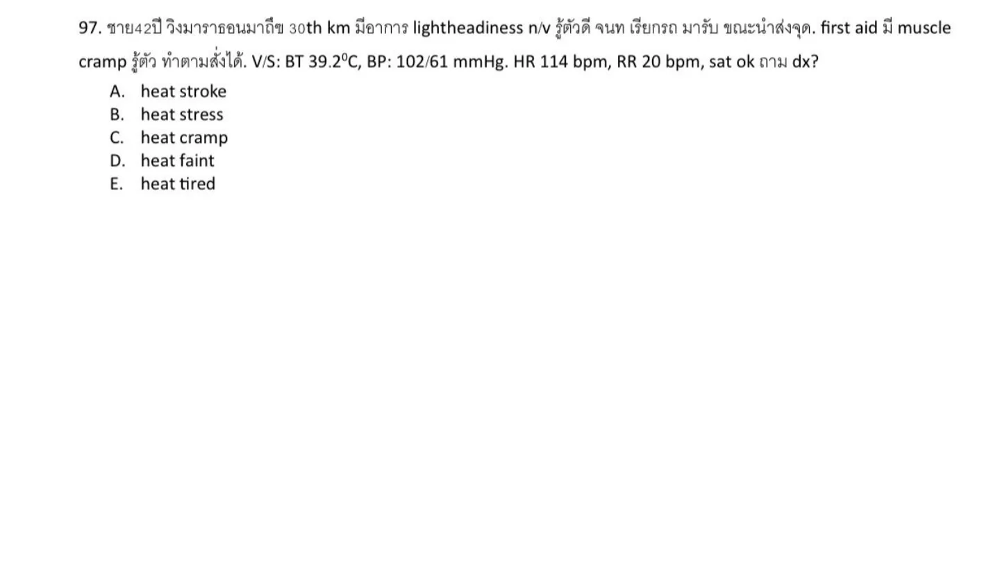
crop
ยังไม่ถูก
A. heat stroke
ถูกต้อง
The source answer page circles `B. heat stress`. He has exertional heat illness symptoms with dizziness, nausea/vomiting, cramps, tachycardia, and elevated temperature, but remains conscious and follows commands, so this is not heat stroke. In this exam set, `heat stress` is the keyed umbrella/early heat illness answer rather than isolated heat cramp.
The source answer page circles `B. heat stress`. He has exertional heat illness symptoms with dizziness, nausea/vomiting, cramps, tachycardia, and elevated temperature, but remains conscious and follows commands, so this is not heat stroke. In this exam set, `heat stress` is the keyed umbrella/early heat illness answer rather than isolated heat cramp.
References
- Source answer crop: `source_pdf_inventory/page_images/exam-r2-เฉลย-environment-2566/page_0006.png`. - CDC/NIOSH heat illness summary: heat stress can progress to heat-related illness; heat cramps may occur with heat exhaustion/stress, while heat stroke is defined by severe CNS dysfunction. https://www.cdc.gov/niosh/heat-stress/about/illnesses.html
A05-0003A05-Q0003solution_ready
ปลากระเบนทิ่มเท้า ให้ pain control
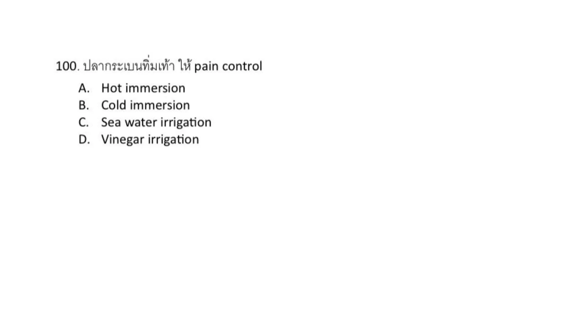
crop
ถูกต้อง
The source answer page circles hot immersion. Stingray, catfish, lionfish, scorpionfish, and similar penetrating marine envenomations cause heat-labile venom pain; hot water immersion is used for analgesia and venom inactivation.
The source answer page circles hot immersion. Stingray, catfish, lionfish, scorpionfish, and similar penetrating marine envenomations cause heat-labile venom pain; hot water immersion is used for analgesia and venom inactivation.
ชาย 25 ปี วูบขณะวิ่ง marathon. BT 40, PR 140, good consciousness. EKG: NSR, no ST change.
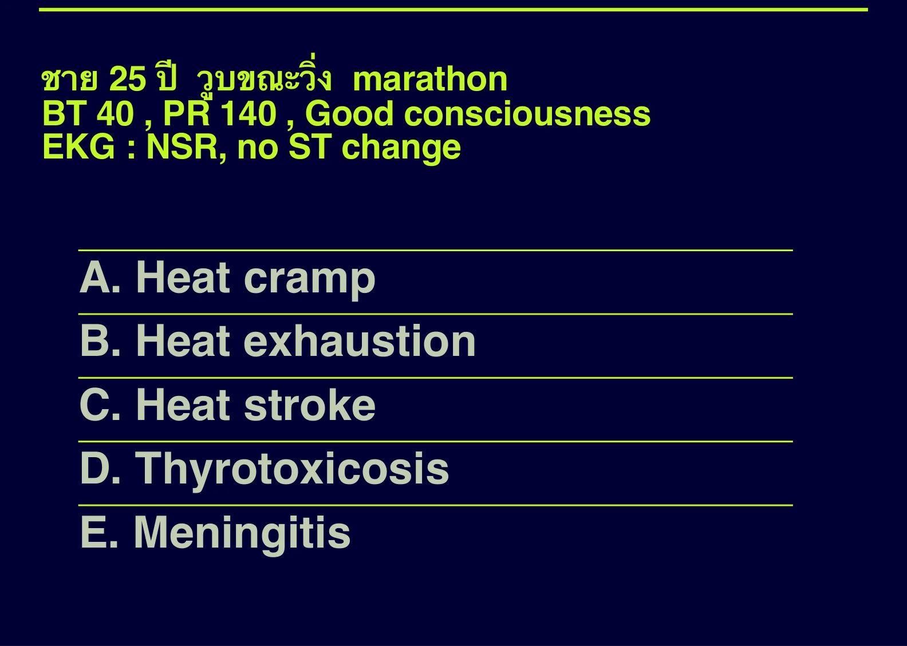
crop
ยังไม่ถูก
A. Heat cramp
ถูกต้อง
Core temperature is high after exertion, but he has good consciousness and no neurologic dysfunction. Heat stroke requires CNS dysfunction such as confusion, seizure, delirium, or coma; exertional hyperthermia without CNS dysfunction fits heat exhaustion better than heat stroke.
Core temperature is high after exertion, but he has good consciousness and no neurologic dysfunction. Heat stroke requires CNS dysfunction such as confusion, seizure, delirium, or coma; exertional hyperthermia without CNS dysfunction fits heat exhaustion better than heat stroke.
References
- CDC/NIOSH heat illness summary: heat stroke has confusion, altered mental status, slurred speech, loss of consciousness, or seizures; heat exhaustion can include dizziness, nausea, weakness, and elevated temperature. https://www.cdc.gov/niosh/heat-stress/about/illnesses.html
A05-0005A05-Q0005solution_ready
ชาย 20 ปี ถูกนำส่งห้องฉุกเฉินด้วยอาการซึม เพ้อ ชัก หมดสติมาประมาณ 1 ชม. PE: hot, dry skin; PR 130, BT 42 rectal, BP 100/70, RR 24, pupil 3 mm good react to light. การรักษาที่จำเป็นต้องทำอย่างเร่งด่วนที่สุดเป็นลำดับแรก คือข้อใด
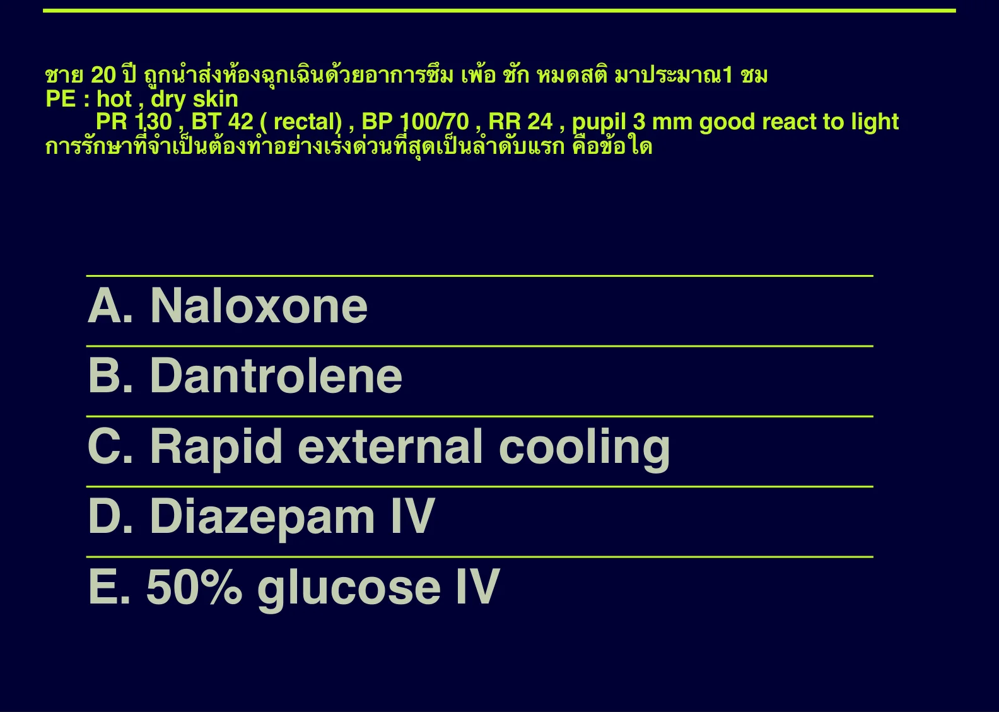
crop
ยังไม่ถูก
A. Naloxone
ยังไม่ถูก
B. Dantrolene
ถูกต้อง
This is heat stroke: rectal temperature 42 C with delirium, seizure, and coma. The most urgent treatment is immediate active cooling. Dantrolene is for malignant hyperthermia/neuroleptic malignant syndrome patterns, not routine environmental heat stroke.
This is heat stroke: rectal temperature 42 C with delirium, seizure, and coma. The most urgent treatment is immediate active cooling. Dantrolene is for malignant hyperthermia/neuroleptic malignant syndrome patterns, not routine environmental heat stroke.
References
- CDC/NIOSH heat illness summary: heat stroke is a medical emergency requiring rapid cooling. https://www.cdc.gov/niosh/heat-stress/about/illnesses.html
She has mild exertional heat illness/heat exhaustion: temperature 38.8 C, moist skin, headache, fatigue, and no CNS dysfunction. Moving to a cool shaded environment with supportive cooling is the appropriate least invasive option here; ice-water immersion or invasive lavage is reserved for severe heat stroke.
She has mild exertional heat illness/heat exhaustion: temperature 38.8 C, moist skin, headache, fatigue, and no CNS dysfunction. Moving to a cool shaded environment with supportive cooling is the appropriate least invasive option here; ice-water immersion or invasive lavage is reserved for severe heat stroke.
References
- CDC/NIOSH heat illness summary: move heat-exhaustion patients to a cool place and cool them; reserve emergency rapid cooling for heat stroke. https://www.cdc.gov/niosh/heat-stress/about/illnesses.html
A05-0007A05-Q0007solution_ready
32 years old female presented at ED after eating fish at a restaurant with symptoms of numbness, tingling, headache and erythematous rash over her face, neck and upper chest, what likely responsible for this symptoms
crop
ถูกต้อง
The source crop marks histidine. The flushing/erythematous rash, headache, numbness/tingling after fish meal is scombroid-type histamine toxicity; fish histidine is converted to histamine by bacterial decarboxylation during improper storage.
ยังไม่ถูก
B. Ciguatoxin
ยังไม่ถูก
C. Tetrodotoxin
ยังไม่ถูก
D. Domoic acid
ยังไม่ถูก
E. Botulinum toxin
Source: Test marine.pdf | Page/slot: 1 | Marker: Q1
Reference: Source: Test marine.pdf | Page/slot: 1 | Marker: Q1
ซ่อนเฉลยเปิดเฉลยSolution readyA05-0007 answer
Answer
A. Histidine
Rationale
The source crop marks histidine. The flushing/erythematous rash, headache, numbness/tingling after fish meal is scombroid-type histamine toxicity; fish histidine is converted to histamine by bacterial decarboxylation during improper storage.
References
- Source answer crop: `source_pdf_inventory/page_images/test-marine/page_0001.png`. - StatPearls, Scombroid and Histamine Toxicity: histidine in fish is converted to histamine. https://www.ncbi.nlm.nih.gov/books/NBK499871/
A05-0008A05-Q0008solution_ready
24 year-old male scuba diving presented at ED after jellyfish sting for 30 minutes. He start intense pain with agitation and sweating. BT 37, BP 210/140, PR 140, RR 25, SpO2 98% Lt.leg: frost ladder pattern. What is the organism?
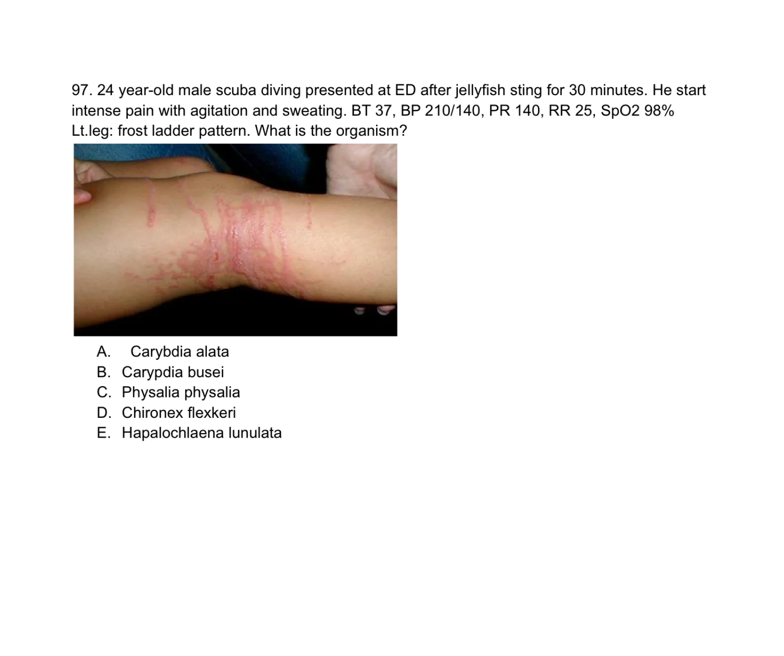
crop
ถูกต้อง
The severe pain, agitation, sweating, marked hypertension/tachycardia, and ladder-like jellyfish sting pattern point to Irukandji/box-jelly spectrum envenomation. Among the organism choices, `Carybdea alata` is the Irukandji-like box jellyfish choice; `Chironex fleckeri` is more classically massive box jellyfish envenomation with rapid cardiotoxic collapse.
ยังไม่ถูก
B. Carypdia busei
ยังไม่ถูก
C. Physalia physalia
ยังไม่ถูก
D. Chironex flexkeri
ยังไม่ถูก
E. Hapalochlaena lunulata
Source: Test marine.pdf | Page/slot: 3 | Marker: Q2
Reference: Source: Test marine.pdf | Page/slot: 3 | Marker: Q2
ซ่อนเฉลยเปิดเฉลยSolution readyA05-0008 answer
Answer
A. Carybdea alata
Rationale
The severe pain, agitation, sweating, marked hypertension/tachycardia, and ladder-like jellyfish sting pattern point to Irukandji/box-jelly spectrum envenomation. Among the organism choices, `Carybdea alata` is the Irukandji-like box jellyfish choice; `Chironex fleckeri` is more classically massive box jellyfish envenomation with rapid cardiotoxic collapse.
References
- Source crop: `source_pdf_inventory/page_images/test-marine/page_0003.png`. - Source reference table in this packet groups `Carybdea alata` under box jellyfish/Irukandji-related management: `source_pdf_inventory/page_images/exam-r2-เฉลย-environment-2566/page_0010.png`.
A05-0009A05-Q0009solution_ready
ชาย ไปเล่นน้ำทะเล ถูก string gray fish มีแผลที่ตรงคอ ให้รูปแผลมา เหมือนเป็นแผล laceration with pus ถาม ATB
- cefazolin + ciprofloxacin
crop
Source: Test marine.pdf | Page/slot: 5 | Marker: Q3
Reference: Source: Test marine.pdf | Page/slot: 5 | Marker: Q3
ซ่อนเฉลยเปิดเฉลยSolution readyA05-0009 answer
Answer
cefazolin + ciprofloxacin
Rationale
The source page itself gives `cefazolin+ciprofloxacin`. Marine wound infections need gram-positive skin coverage plus seawater gram-negative/Vibrio coverage; cefazolin covers staphylococci/streptococci and ciprofloxacin covers marine gram-negative organisms including Vibrio.
After lightning/electrical injury, a painful pale cold limb with uncertain/poor pulse suggests deep tissue injury with compartment syndrome or vascular compromise. Observation is unsafe when there are ischemic signs; fasciotomy is the available definitive decompression option.
After lightning/electrical injury, a painful pale cold limb with uncertain/poor pulse suggests deep tissue injury with compartment syndrome or vascular compromise. Observation is unsafe when there are ischemic signs; fasciotomy is the available definitive decompression option.
References
- StatPearls point-of-care electrical injuries: high-voltage injuries can cause deep tissue injury and require monitoring for compartment syndrome/vascular compromise. https://www.statpearls.com/point-of-care/20967
A05-0011A05-Q0011solution_ready
170. ท่านเป็น EMS พบชาย 35 ปีถูกไฟช็อตขณะทำงาน จากนั้นยกแขนไม่ได้เพราะปวด V/S stable PE second degree burn at both arm chest back จะทำอะไรก่อนถึง รพ
Prehospital burn care for an electrical burn should cover the burn with a clean sterile dry dressing and avoid wet dressings, cold packs, or scrubbing. Cooling/scrubbing can worsen tissue injury or hypothermia and does not address the deep electrical injury risk.
References
- StatPearls point-of-care electrical injuries: management includes wound care and evaluation for deep tissue injury/arrhythmia rather than wet/cold dressing or scrubbing. https://www.statpearls.com/point-of-care/20967
A05-0012A05-Q0012solution_ready
ชาย 40 chronic alcohol drinking นอนอยู่ในบ้านพัก at songkran festival no U/D BT 40.5 RR 26 PR 120 BP 90/60, no sweating ถาม mechanism
crop
ยังไม่ถูก
A. activation of hypothalamus
ยังไม่ถูก
B. dopamine
ถูกต้อง
Classic/non-exertional heat stroke in a dehydrated chronic alcohol user during hot weather can involve failure of heat dissipation. Reduced effective circulating volume and cutaneous perfusion limits heat loss through skin blood flow and sweating, fitting the no-sweating severe hyperthermia picture better than fever/hypothalamic activation or increased muscle activity.
Classic/non-exertional heat stroke in a dehydrated chronic alcohol user during hot weather can involve failure of heat dissipation. Reduced effective circulating volume and cutaneous perfusion limits heat loss through skin blood flow and sweating, fitting the no-sweating severe hyperthermia picture better than fever/hypothalamic activation or increased muscle activity.
References
- CDC/NIOSH heat illness summary: severe heat illness reflects failure of thermoregulation/heat dissipation and heat stroke is a medical emergency. https://www.cdc.gov/niosh/heat-stress/about/illnesses.html
The frost-ladder jellyfish sting pattern is treated first by inactivating undischarged nematocysts. In the exam source table, box jellyfish/Carybdea/Carukia-related stings use topical 5% acetic acid, i.e. vinegar; fresh water, rubbing, and oils can trigger more nematocyst discharge.
The frost-ladder jellyfish sting pattern is treated first by inactivating undischarged nematocysts. In the exam source table, box jellyfish/Carybdea/Carukia-related stings use topical 5% acetic acid, i.e. vinegar; fresh water, rubbing, and oils can trigger more nematocyst discharge.
Cold-triggered bilateral hand pallor and pain that improves with rewarming is Raynaud phenomenon. First-line drug therapy is a dihydropyridine calcium-channel blocker such as nifedipine or amlodipine.
Cold-triggered bilateral hand pallor and pain that improves with rewarming is Raynaud phenomenon. First-line drug therapy is a dihydropyridine calcium-channel blocker such as nifedipine or amlodipine.
References
- Review article on Raynaud phenomenon management: calcium-channel blockers are first-line pharmacologic therapy. https://www.ncbi.nlm.nih.gov/books/NBK499833/
A05-0015A05-Q0015solution_ready
99. 21-year-old football player received cryotherapy with inappropriate footwear. He developed numbness on his feet. Vital signs is stable. Examination skin pale and mottling. What is the most appropriate management?
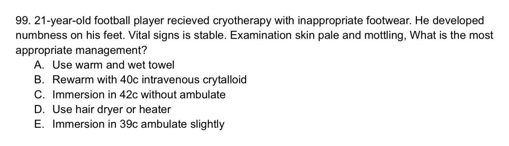
crop
ยังไม่ถูก
A. Use warm and wet towel
ยังไม่ถูก
B. Rewarm with 40c intravenous crystalloid
ถูกต้อง
The pale mottled numb feet after cold exposure/cryotherapy suggest frostbite/cold injury. Best management is rapid rewarming in circulating warm water around 37-39 C or up to 40-42 C until thawed, and the injured limb should not be ambulated if refreezing/trauma risk exists. Among the options, warm-water immersion without ambulation is best.
The pale mottled numb feet after cold exposure/cryotherapy suggest frostbite/cold injury. Best management is rapid rewarming in circulating warm water around 37-39 C or up to 40-42 C until thawed, and the injured limb should not be ambulated if refreezing/trauma risk exists. Among the options, warm-water immersion without ambulation is best.
References
- Wilderness Medical Society frostbite guideline: rapid field rewarming uses warm water bath around 37-39 C when refreezing risk is absent. https://journals.sagepub.com/doi/10.1016/j.wem.2019.05.002
For acute mountain sickness, the patient should not continue ascent while symptomatic. Ascent can resume only after symptoms have resolved and the patient is stable; simply taking a fixed number of acetazolamide tablets or reaching a pulse-ox threshold is not enough.
ยังไม่ถูก
C. O2sat >95%
ยังไม่ถูก
D. ขึ้นได้เลย
Source: Test high altitude sickness.pdf | Page/slot: 1 | Marker: Page 1 Question
Reference: Source: Test high altitude sickness.pdf | Page/slot: 1 | Marker: Page 1 Question
ซ่อนเฉลยเปิดเฉลยSolution readyA05-0016 answer
Answer
B. อาการเป็นปกติ
Rationale
For acute mountain sickness, the patient should not continue ascent while symptomatic. Ascent can resume only after symptoms have resolved and the patient is stable; simply taking a fixed number of acetazolamide tablets or reaching a pulse-ox threshold is not enough.
References
- Wilderness Medical Society altitude illness guideline: patients with altitude illness should stop ascent and resume only after symptoms resolve. https://journals.sagepub.com/doi/10.1016/j.wem.2023.05.013
The combination of frost-ladder jellyfish sting markings plus catecholamine surge with severe hypertension/tachycardia is classic for Irukandji syndrome. Box jellyfish is a broader category, but the catecholamine-surge syndrome in the answer choices points specifically to Irukandji.
The combination of frost-ladder jellyfish sting markings plus catecholamine surge with severe hypertension/tachycardia is classic for Irukandji syndrome. Box jellyfish is a broader category, but the catecholamine-surge syndrome in the answer choices points specifically to Irukandji.
Burn size is 25% TBSA. Using Parkland-style initial resuscitation, 4 mL x body weight x %TBSA is given over 24 h, with half in the first 8 h. For a 6-year-old estimated around 20-22 kg, the first-8-hour rate is about 125-138 mL/hr, so the closest option is 133 mL/hr.
Burn size is 25% TBSA. Using Parkland-style initial resuscitation, 4 mL x body weight x %TBSA is given over 24 h, with half in the first 8 h. For a 6-year-old estimated around 20-22 kg, the first-8-hour rate is about 125-138 mL/hr, so the closest option is 133 mL/hr.
References
- StatPearls, Burn Fluid Resuscitation: Parkland formula gives 4 mL/kg/%TBSA in the first 24 h, half in the first 8 h. https://www.ncbi.nlm.nih.gov/books/NBK534227/
A05-0019A05-Q0019solution_ready
19. หญิงประมาณ 35 ปี ดํานํ้าลึก 100ft 30m ปฏิบัติตามกฏการดํานํ้าทุกอย่าง มีการหยุดพักหายใจ ระหว่างการขึ้นทุกอย่าง หลังจากขึ้นจากผิวนํ้ามา 30 นาที ผู้ป่วยมีอาการเจ็บหน้าอก หายใจเหนื่อย เวียนศีรษะ ไอ ไม่มีไข้ SPO2 92%, RS: Clear BL, trachea in midline NS: WNL no neurodeficit CXR: no infiltration BL A: Barotrauma B: DCS type I C: DCS type II D: Arterial gas embolism E: Nitrogen narcosis
Symptoms begin after surfacing from a 100-ft dive and include cardiopulmonary/vestibular symptoms: chest pain, dyspnea, dizziness, cough, and low oxygen saturation. DCS type I is mainly pain/skin/lymphatic; DCS type II includes neurologic, vestibular, and cardiopulmonary involvement. Arterial gas embolism usually presents very rapidly with prominent neurologic deficits after ascent.
References
- Merck Manual Professional, Decompression Sickness: type II includes neurologic, vestibular, and pulmonary manifestations. https://www.merckmanuals.com/professional/injuries-poisoning/injury-during-diving-or-work-in-compressed-air/decompression-sickness
She had acute mountain sickness symptoms at altitude and has a history of severe sulfa anaphylaxis, making acetazolamide a poor exam choice. Nifedipine is for HAPE prevention/treatment, not uncomplicated AMS. Among the available options, dexamethasone is the AMS treatment alternative when acetazolamide is avoided.
She had acute mountain sickness symptoms at altitude and has a history of severe sulfa anaphylaxis, making acetazolamide a poor exam choice. Nifedipine is for HAPE prevention/treatment, not uncomplicated AMS. Among the available options, dexamethasone is the AMS treatment alternative when acetazolamide is avoided.
References
- Wilderness Medical Society altitude illness guideline: dexamethasone is an effective treatment option for AMS when descent/acclimatization measures are insufficient or acetazolamide is not used. https://journals.sagepub.com/doi/10.1016/j.wem.2023.05.013
A05-0022A05-Q0022solution_ready
23. โดนไฟดูด high voltage(13,000) แผลรูเข้าที่มือขวา รูออกที่แขนขวา ปวดบวมแขน pulse weak, cap refill 4 sec, EKG ดี Mx
crop
ถูกต้อง
High-voltage electrical injury with entry/exit wounds, progressive arm swelling, weak pulse, and delayed capillary refill suggests deep muscle injury with compartment syndrome/vascular compromise. Fasciotomy is preferred over observation or anticoagulation when compartment syndrome is suspected.
High-voltage electrical injury with entry/exit wounds, progressive arm swelling, weak pulse, and delayed capillary refill suggests deep muscle injury with compartment syndrome/vascular compromise. Fasciotomy is preferred over observation or anticoagulation when compartment syndrome is suspected.
References
- StatPearls point-of-care electrical injuries: high-voltage injuries can cause deep tissue injury and compartment syndrome requiring surgical evaluation/decompression. https://www.statpearls.com/point-of-care/20967
Even though the mother is clinically well with a normal ECG after low-voltage household shock, pregnancy adds fetal risk. With fetal movement present and no maternal instability, the next step among the options is fetal monitoring with NST rather than discharge, urgent ultrasound, or routine troponin/CPK.
Even though the mother is clinically well with a normal ECG after low-voltage household shock, pregnancy adds fetal risk. With fetal movement present and no maternal instability, the next step among the options is fetal monitoring with NST rather than discharge, urgent ultrasound, or routine troponin/CPK.
References
- Electrical injury reviews recommend fetal assessment/monitoring after maternal electrical shock when pregnancy is viable, even if maternal findings are reassuring. https://www.ncbi.nlm.nih.gov/books/NBK448087/
A05-0024A05-Q0024solution_ready
94. Female pain Lt. arm while swam. Bystander remove something in Lt. arm with twitter pain initial relieve then 20min severe pain at Lt. arm trunk back lower extremity. Vomiting +collasp BP190/140. Which species ?
crop
ถูกต้อง
Severe delayed systemic pain, vomiting/collapse, and marked hypertension after jellyfish sting fits Irukandji syndrome from Carukia species.
Severe delayed systemic pain, vomiting/collapse, and marked hypertension after jellyfish sting fits Irukandji syndrome from Carukia species.
A05-0026A05-Q0026solution_ready
A 60-year-old woman was brought into the ED by her family who stated that she had been weak, lethargic, and saying "crazy things" over the last 2 days. Her family also stated that her medical history was significant only for a disease of her thyroid. Vital signs: BT 34 C, HR 51/min, RR 12/min, BP 120/90 mmHg. On examination, the patient was overweight, her skin was dry, and you noticed periorbital edema. On neurologic examination, the patient did not respond to stimulation. Which of the following is the most likely diagnosis?
crop
ยังไม่ถูก
A. Acute stroke
ยังไม่ถูก
B. Schizophrenia
ยังไม่ถูก
C. Grave's disease
ถูกต้อง
Hypothermia, bradycardia, dry skin, periorbital edema and coma in thyroid disease are classic myxedema coma.
Marine puncture wound/flexor tenosynovitis should cover marine gram-negatives including Vibrio/Aeromonas; ciprofloxacin plus doxycycline is best listed.
Marine puncture wound/flexor tenosynovitis should cover marine gram-negatives including Vibrio/Aeromonas; ciprofloxacin plus doxycycline is best listed.
Most likely congenital adrenal hyperplasia/adrenal crisis, but that answer is not visible in the listed options.
Rationale
The neonatal vomiting, lethargy, hypothermia, hyponatremia, hyperkalemia, AKI, and hypoglycemia fit salt-wasting adrenal crisis/CAH. The visible choices only show NEC, maple syrup urine disease, and pyloric stenosis, so the original source choice list is incomplete even though the clinical diagnosis is clear.
95. Male 28yr treking at 1500m 3 day ago. Today trek at 4500m slow and rest more frequently. Visit mountain clinic cough dyspnea BT36.6 RR24 PR110 BP138/89 SpO2 98%. He explain that cant descent immdiatly, which alternative treatment?
crop
ถูกต้อง
High-altitude pulmonary symptoms when descent is not possible should receive supplemental oxygen when available.
Marine puncture wound/flexor tenosynovitis requires marine gram-negative coverage including Vibrio/Aeromonas.
A05-0034A05-Q0034solution_ready
120. ชายไทย Motorcycle accident ใส่ ETT BT 34.5 BP80/50 PR110 ETCO2 35 หลังจาก observe อาการ ETCO2 decreasing to 12 RS : no decrease BS เป็นจากสาเหตุอะไร
crop
ยังไม่ถูก
A. Hypothermia
ถูกต้อง
A falling ETCO2 from 35 to 12 after traumatic intubation, without decreased breath sounds, most strongly reflects falling pulmonary blood flow from shock/hemorrhage.
A falling ETCO2 from 35 to 12 after traumatic intubation, without decreased breath sounds, most strongly reflects falling pulmonary blood flow from shock/hemorrhage.
MCQ 2563 by EP15 Rajavithi.pdf, source page image p.18
ถูกต้อง
Hypothermia, bradycardia, altered mental status, edema, and delayed deep tendon reflexes are classic for myxedema crisis/coma.
Source: Old special HTML: A04 | Page/slot: old-special | Marker: a04-miscellaneous-q2
Reference: Source: Old special HTML: A04 | Page/slot: old-special | Marker: a04-miscellaneous-q2
ซ่อนเฉลยเปิดเฉลยSolution readyA05-0035 answer
Answer
A. myxedema crisis
Rationale
Hypothermia, bradycardia, altered mental status, edema, and delayed deep tendon reflexes are classic for myxedema crisis/coma.
References
- Source note: Source-limited item: original page lists a diagnosis prompt with one visible choice only. - Original reference: Reference: Source: MCQ 2563 by EP15 Rajavithi.pdf | p.1-34
Myxedema coma is treated with intravenous levothyroxine, with supportive care and stress-dose steroid coverage when adrenal insufficiency is possible. Among the listed options, IV T4 is the best core treatment.
ยังไม่ถูก
C. IV T3
ยังไม่ถูก
D. IV ATB
ยังไม่ถูก
E. fluid resuscitation
Source: Old special HTML: A04 | Page/slot: old-special | Marker: a04-thyroid-and-adrenal-q2
Reference: Source: Old special HTML: A04 | Page/slot: old-special | Marker: a04-thyroid-and-adrenal-q2
ซ่อนเฉลยเปิดเฉลยSolution readyA05-0036 answer
Answer
B. IV T4
Rationale
Myxedema coma is treated with intravenous levothyroxine, with supportive care and stress-dose steroid coverage when adrenal insufficiency is possible. Among the listed options, IV T4 is the best core treatment.
Q6. คนแก่ ซึม hypotension, hypothermia, bradycardia, edema 2+. ให้ IV fluid + inotrope แล้ว BP ยัง drop. Next management?
MCQ 2563 by EP15 Rajavithi.pdf, source page image p.18
ยังไม่ถูก
A. Thyroxine
ยังไม่ถูก
B. Norepinephrine
ยังไม่ถูก
C. IV NSS
ถูกต้อง
In suspected myxedema coma with persistent shock, empiric stress-dose hydrocortisone is given because concomitant adrenal insufficiency can worsen after thyroid hormone therapy.
Source: Old special HTML: A04 | Page/slot: old-special | Marker: a04-thyroid-and-adrenal-q6
Reference: Source: Old special HTML: A04 | Page/slot: old-special | Marker: a04-thyroid-and-adrenal-q6
ซ่อนเฉลยเปิดเฉลยSolution readyA05-0037 answer
Answer
D. Hydrocortisone
Rationale
In suspected myxedema coma with persistent shock, empiric stress-dose hydrocortisone is given because concomitant adrenal insufficiency can worsen after thyroid hormone therapy.
References
- Source note: Extra A04 endocrine source item recovered from EP15 page 18. - Original reference: Reference: Source: MCQ 2563 by EP15 Rajavithi.pdf | p.18
Q16. 85. 32 years old female presented at ED after eating fish at a restaurant with symps toms of numbness, tingling, headache and erythematous rash over her face, neck and upper chest, what likely responsible for this symptoms . Histidine . Ciguatoxin . Tetrodotoxin . Domoic acid . Botulinum toxin
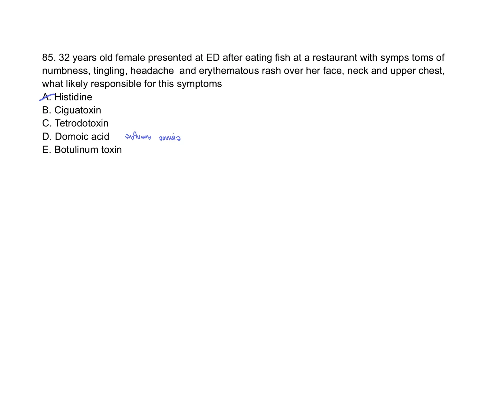
Test marine.pdf, p.1
Source: Old special HTML: A16 | Page/slot: old-special | Marker: a16-envenomation-snake-marine-q16
Reference: Source: Old special HTML: A16 | Page/slot: old-special | Marker: a16-envenomation-snake-marine-q16
ซ่อนเฉลยเปิดเฉลยSolution readyA05-0039 answer
Answer
Histidine
Rationale
Fish-associated flushing, headache, paresthesias, and erythematous rash soon after eating is scombroid poisoning, caused by histidine conversion to histamine in spoiled fish.
References
- Source note: Original source image preserved from Test marine.pdf p.1. Choices transcribed from the source image; answer/lesson intentionally not imported. - Original reference: Reference: Source: Test marine.pdf | p.1 | full source page rendered; answer intentionally not imported.
A05-0040A05-Q0040solution_ready
Q18. 97. 24 year-old male scuba diving presented at ED after jellyfish sting for 30 minutes. He start intense pain with agitation and sweating. BT 37, BP 210/140, PR 140, RR 25, SpO2 98% Lt.leg: frost ladder pattern. What is the organism? . Carybdia alata . Carypdia busei . Physalia physalia . Chironex flexkeri . Hapalochlaena lunulata
Test marine.pdf, p.3
Source: Old special HTML: A16 | Page/slot: old-special | Marker: a16-envenomation-snake-marine-q18
Reference: Source: Old special HTML: A16 | Page/slot: old-special | Marker: a16-envenomation-snake-marine-q18
ซ่อนเฉลยเปิดเฉลยSolution readyA05-0040 answer
Answer
Carybdia alata
Rationale
Severe pain with diaphoresis, agitation, hypertension, and tachycardia after jellyfish sting is an Irukandji-like syndrome; Carybdea/Carybdia alata is the closest listed organism.
References
- Source note: Original source image preserved from Test marine.pdf p.3. Choices transcribed from the source image; answer/lesson intentionally not imported. - Original reference: Reference: Source: Test marine.pdf | p.3 | full source page rendered; answer intentionally not imported.
A05-0041A05-Q0041solution_ready
Q20. ดูโจทย์ต้นฉบับจากรูป source page: Test marine.pdf p.5
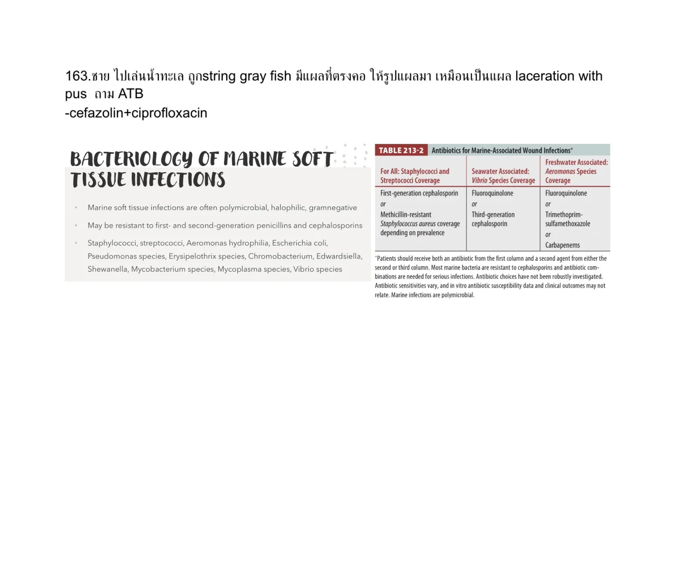
Test marine.pdf, p.5
Source: Old special HTML: A16 | Page/slot: old-special | Marker: a16-envenomation-snake-marine-q20
Reference: Source: Old special HTML: A16 | Page/slot: old-special | Marker: a16-envenomation-snake-marine-q20
ซ่อนเฉลยเปิดเฉลยSolution readyA05-0041 answer
Answer
cefazolin + ciprofloxacin
Rationale
The source image asks for antibiotics for a seawater-associated laceration with pus. Coverage should include skin flora plus Vibrio/marine gram-negative organisms, matching cefazolin plus ciprofloxacin.
References
- Source note: Source image preserved from Test marine.pdf p.5. No answer/lesson in this collection pass. - Original reference: Reference: Source: Test marine.pdf | p.5 | full source page rendered; answer intentionally not imported.
A05-0042A05-Q0042solution_ready
Q21. ดูโจทย์ต้นฉบับจากรูป source page: Test marine.pdf p.6
Test marine.pdf, p.6
Source: Old special HTML: A16 | Page/slot: old-special | Marker: a16-envenomation-snake-marine-q21
Reference: Source: Old special HTML: A16 | Page/slot: old-special | Marker: a16-envenomation-snake-marine-q21
ซ่อนเฉลยเปิดเฉลยSolution readyA05-0042 answer
Answer
Source crop is blank/unreadable; no answer can be assigned from the preserved image.
Rationale
The rendered Test marine.pdf p.6 crop is blank, so this row should be flagged for source review rather than assigned a guessed medical answer.
References
- Source note: Source image preserved from Test marine.pdf p.6. No answer/lesson in this collection pass. - Original reference: Reference: Source: Test marine.pdf | p.6 | full source page rendered; answer intentionally not imported.
A05-0043A05-Q0043solution_ready
Q22. An otherwise healthy 7-year-old girl is brought to the emergency department by her parents for evalua tion after being stung by a scorpion. Parents state that about 2 hours ago the patient began to scream and cry in pain after being stung on her foot by a scorpion found while putting on her shoes. On examination, she is tachycardic, diaphoretic, tremulous, and in acute discomfort. The plantar aspect of her right foot is ery thematous and extremely tender. While in the emer gency department she begins to display uncontrollable jerking motion of the extremities. Which is the MOST APPROPRIATE NEXT step in management?
McGraw Chapter 14: Environmental Injuries, p.192
ถูกต้อง
Systemic scorpion envenomation with autonomic symptoms and neuromuscular jerking is treated with antivenom plus benzodiazepines and airway preparation if symptoms progress.
ยังไม่ถูก
B. Blood pressure control with prazosin
ยังไม่ถูก
C. Repeated intravenous atropine administration
ยังไม่ถูก
D. Tourniquet application to the right lower extrem ity and local wound care
Source: Old special HTML: A16 | Page/slot: old-special | Marker: a16-envenomation-snake-marine-q22
Reference: Source: Old special HTML: A16 | Page/slot: old-special | Marker: a16-envenomation-snake-marine-q22
ซ่อนเฉลยเปิดเฉลยSolution readyA05-0043 answer
Answer
A. Antivenom, benzodiazepines, and preparation for orotracheal intubation
Rationale
Systemic scorpion envenomation with autonomic symptoms and neuromuscular jerking is treated with antivenom plus benzodiazepines and airway preparation if symptoms progress.
References
- Source note: Potential toxicology-adjacent envenomation/marine item originally routed to A05. Full source page preserved; no answer/lesson in this pass. - Original reference: Reference: Source: McGraw Chapter 14: Environmental Injuries | p.192 | environmental envenomation/marine toxin candidate; answer intentionally not imported.
A05-0044A05-Q0044solution_ready
Q23. Which of the following features is MOST consistent with a brown recluse spider bite?
McGraw Chapter 14: Environmental Injuries, p.192
ยังไม่ถูก
A. Painful, 1 to 2 cm target lesion
ถูกต้อง
Brown recluse bites are often initially painless and can progress to hemorrhagic blistering and local necrosis.
ยังไม่ถูก
C. Painful, local erythema, and edema
ยังไม่ถูก
D. Severely painful, erythematous wheal
Source: Old special HTML: A16 | Page/slot: old-special | Marker: a16-envenomation-snake-marine-q23
Reference: Source: Old special HTML: A16 | Page/slot: old-special | Marker: a16-envenomation-snake-marine-q23
ซ่อนเฉลยเปิดเฉลยSolution readyA05-0044 answer
Answer
B. Painless, firm, and erythematous lesion progressing to local hemorrhagic blister or dermatonecrosis
Rationale
Brown recluse bites are often initially painless and can progress to hemorrhagic blistering and local necrosis.
References
- Source note: Potential toxicology-adjacent envenomation/marine item originally routed to A05. Full source page preserved; no answer/lesson in this pass. - Original reference: Reference: Source: McGraw Chapter 14: Environmental Injuries | p.192 | environmental envenomation/marine toxin candidate; answer intentionally not imported.
A05-0045A05-Q0045solution_ready
Q24. Which of the following is an indicated first-aid mea sure for management of pit viper envenomation?
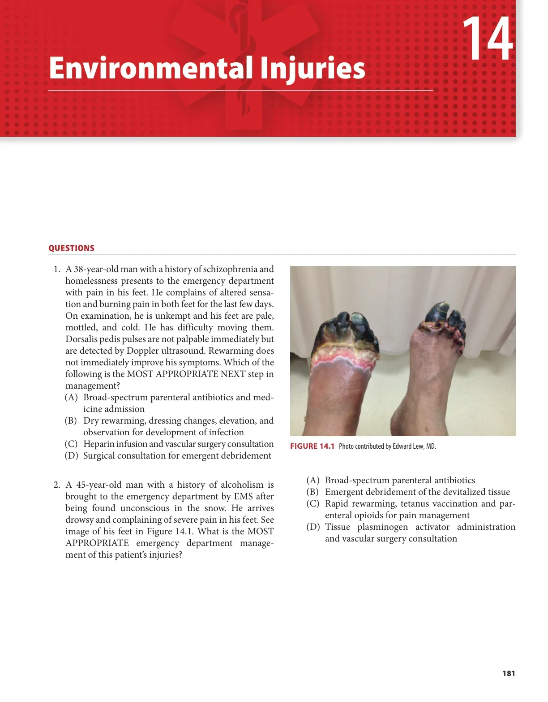
McGraw Chapter 14: Environmental Injuries, p.192
ถูกต้อง
Pit viper first aid is immobilization and transport; incision, suction, and tourniquets are harmful or not indicated.
ยังไม่ถูก
B. Incision and drainage
ยังไม่ถูก
C. Suction the bite site either by mouth or with snake bite kit
ยังไม่ถูก
D. Tourniquet application proximal to the bite site
Source: Old special HTML: A16 | Page/slot: old-special | Marker: a16-envenomation-snake-marine-q24
Reference: Source: Old special HTML: A16 | Page/slot: old-special | Marker: a16-envenomation-snake-marine-q24
ซ่อนเฉลยเปิดเฉลยSolution readyA05-0045 answer
Answer
A. Immobilization of the extremity in a neutral position below the level of the heart
Rationale
Pit viper first aid is immobilization and transport; incision, suction, and tourniquets are harmful or not indicated.
References
- Source note: Potential toxicology-adjacent envenomation/marine item originally routed to A05. Full source page preserved; no answer/lesson in this pass. - Original reference: Reference: Source: McGraw Chapter 14: Environmental Injuries | p.192 | environmental envenomation/marine toxin candidate; answer intentionally not imported.
A05-0046A05-Q0046solution_ready
Q25. A 31-year-old man comes to the emergency department complaining of severe pain in his leg. He states that while snorkeling off a coral reef he felt sudden onset stinging pain in his left calf. Shortly after arrival he begins to complain of chest tightness. In addition to supportive measures, which of the following is the BEST INITIAL management of his skin lesion (Figure 14.2)?
McGraw Chapter 14: Environmental Injuries, p.192
ยังไม่ถูก
A. Cold water immersion
ยังไม่ถูก
B. Irrigation with acetic acid
ถูกต้อง
Marine stings with severe local pain are managed initially by rinsing and hot-water immersion for pain control; tourniquets and cold immersion are not preferred.
ยังไม่ถูก
D. Tourniquet application
Source: Old special HTML: A16 | Page/slot: old-special | Marker: a16-envenomation-snake-marine-q25
Reference: Source: Old special HTML: A16 | Page/slot: old-special | Marker: a16-envenomation-snake-marine-q25
ซ่อนเฉลยเปิดเฉลยSolution readyA05-0046 answer
Answer
C. Irrigation with normal saline and hot water immersion
Rationale
Marine stings with severe local pain are managed initially by rinsing and hot-water immersion for pain control; tourniquets and cold immersion are not preferred.
References
- Source note: Potential toxicology-adjacent envenomation/marine item originally routed to A05. Full source page preserved; no answer/lesson in this pass. - Original reference: Reference: Source: McGraw Chapter 14: Environmental Injuries | p.192 | environmental envenomation/marine toxin candidate; answer intentionally not imported.
A05-0047A05-Q0047solution_ready
Q1. You are on a busy overnight shift and are handed the following ECG for a patient who was just brought in by ambulance. What is the most likely diagnosis?
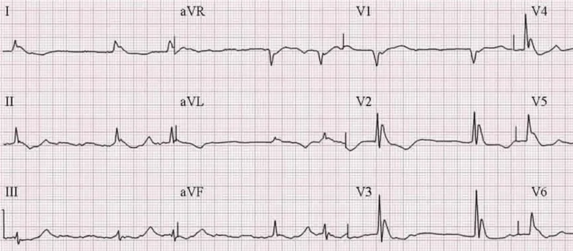
Intraining 2569 Q8 source image
ยังไม่ถูก
A. Hypothermia
ยังไม่ถูก
B. Hyperkalemia
ถูกต้อง
The ECG shows flattened T waves with prominent U waves, which best fits hypokalemia.
ยังไม่ถูก
D. Third-degree heart block
ยังไม่ถูก
E. Tricyclic antidepressant overdose
Source: Old special HTML: A16 | Page/slot: old-special | Marker: a16-metal-and-environmental-tox-q1
Reference: Source: Old special HTML: A16 | Page/slot: old-special | Marker: a16-metal-and-environmental-tox-q1
ซ่อนเฉลยเปิดเฉลยSolution readyA05-0047 answer
Answer
C. Hypokalemia
Rationale
The ECG shows flattened T waves with prominent U waves, which best fits hypokalemia.
References
- Source note: Source file: Intraining exam 100 ข้อ 12 Jan 2026 | Intraining source-preserving stem/options. No official answer key was found in the PDF; keep unanswered until verified. | Review flags: missing_verified_answer_key - Original reference: Reference: Source: Intraining exam 100 ข้อ 12 Jan 2026 | p.6
A05-0048A05-Q0048solution_ready
Q7. What is a problem of which a helicopter air medical team should be aware?
McGraw Chapter 1: Prehospital Care and Disaster Management, p.12
ยังไม่ถูก
A. Chest tubes should not be left to suction during flight, or a pneumothorax may expand.
ถูกต้อง
Gas expansion during flight can increase endotracheal cuff pressure and injure tracheal mucosa if not monitored.
ยังไม่ถูก
C. Medications used for rapid sequence intubation (RSI) in the air, have a different dose-effect than on land.
ยังไม่ถูก
D. While transporting a patient with decompres sion illness, the altitude may improve or resolve their symptoms.
Source: Old special HTML: C | Page/slot: old-special | Marker: c-mcgraw-board-review-q7
Reference: Source: Old special HTML: C | Page/slot: old-special | Marker: c-mcgraw-board-review-q7
ซ่อนเฉลยเปิดเฉลยSolution readyA05-0048 answer
Answer
B. Endotracheal cuff pressure could lead to tracheal mucosal damage or necrosis.
Rationale
Gas expansion during flight can increase endotracheal cuff pressure and injure tracheal mucosa if not monitored.
References
- Source note: Source file: McGraw Chapter 1: Prehospital Care and Disaster Management - Original reference: Reference: Source: McGraw Chapter 1: Prehospital Care and Disaster Management | p.12-15 | Answer provenance: McGraw Ch.1 Q7; answer section p.16
A05-0049A05-Q0049solution_ready
Q40. A 4-years-old boy falls through a cold pond. His heart rate is 80 bpm. At scene, he is intubated and brought to you in ED. You found he is asystole and body temperature is 20 C. The team starts CPR. What is the appropriate next step to manage him? [MCQ 61]
เด็ก trauma.pdf, p.59
ยังไม่ถูก
A. Obtain a CT brain
ยังไม่ถูก
B. Rewarming to 34 C
ยังไม่ถูก
C. Maintain hypothermia
ถูกต้อง
A profoundly hypothermic child in arrest should receive ongoing CPR and active core rewarming; ECMO/CPB rewarming is the definitive option when available.
ยังไม่ถูก
E. Declare the patient dead after complete 30 minutes of CPR
Source: Old special HTML: C | Page/slot: old-special | Marker: c-prehospital-transport-and-triage-q40
Reference: Source: Old special HTML: C | Page/slot: old-special | Marker: c-prehospital-transport-and-triage-q40
ซ่อนเฉลยเปิดเฉลยSolution readyA05-0049 answer
Answer
D. Call for the ECMO team within 6 hours
Rationale
A profoundly hypothermic child in arrest should receive ongoing CPR and active core rewarming; ECMO/CPB rewarming is the definitive option when available.
References
- Source note: Source image preserved from เด็ก trauma.pdf p.59. No answer/lesson in this collection pass. - Original reference: Reference: Source: เด็ก trauma.pdf | p.59 | full source page rendered; answer intentionally not imported.
Q9. เด็กหนัก 20 กก. ถูกงูแมวเซากัด หลังจากให้Antivenom ไป 15 นาที มีอาการหายใจ ล าบาก PE : Skin : Wheal and flare , Lungs : Wheezing at both lungs หลังจากหยุดให้Antivenom และให้On O2 cannula แล้ว Most appropriate Mx?
Test for Snake bite ,.pdf, p.2
ถูกต้อง
This is antivenom-associated anaphylaxis in a 20 kg child. IM epinephrine 1:1000 at 0.01 mg/kg equals 0.2 mg, or 0.2 mL.
ยังไม่ถูก
B. Epinephrine(1:10000) 0.2 ml IM
ยังไม่ถูก
C. Epinephrine(1:1000) 0.2 ml IV
ยังไม่ถูก
D. Epinephrine(1:10000) 0.2 ml IV
ยังไม่ถูก
E. Epinephrine 12 ml + NSS up to 100 ml iv drip rate 1 ml/hr
Source: Old special HTML: A16 | Page/slot: old-special | Marker: a16-envenomation-snake-marine-q9
Reference: Source: Old special HTML: A16 | Page/slot: old-special | Marker: a16-envenomation-snake-marine-q9
ซ่อนเฉลยเปิดเฉลยSolution readyA05-0051 answer
Answer
A. Epinephrine(1:1000) 0.2 ml IM
Rationale
This is antivenom-associated anaphylaxis in a 20 kg child. IM epinephrine 1:1000 at 0.01 mg/kg equals 0.2 mg, or 0.2 mL.
References
- Source note: Source image preserved from Test for Snake bite ,.pdf p.2. No answer/lesson in this collection pass. - Original reference: Reference: Source: Test for Snake bite ,.pdf | p.2 | full source page rendered; answer intentionally not imported.
A05-0052A05-Q0052solution_ready
Q2. A 28‐year‐old male construction worker from Cambodia came to the emergency room due to lockjaw and muscle spasms in the upper and lower limbs. His vital signs revealed a temperature of 38.5 °C, a respiratory rate of 45 breaths/min, an oxygen saturation of 86% on room air, a heart rate of 180 beats/min, and a blood pressure of 178/90 mmHg. He has no notable medical history or vaccinations, but a nail pierced his right sole 3 days prior. On physical examination, he exhibited severe generalized spasms and rigidity in the lower and upper limbs, contractions of the masseter muscles (lockjaw), and sweating. Heart: no murmurs. Lungs: secretion sounds in both lungs. Abdomen: soft, no distension. You administer NSS IV loading 500 ml in 30 minutes. What’s the most appropriate management?
A. Endotracheal intubation with sedation using succinylcholine, start antiepileptic drug, send CT brain non-contrast, IV metronidazole, IM tetanus immunoglobulin
ยังไม่ถูก
B. Endotracheal intubation with benzodiazepine, start antiepileptic drug, send CT brain non-contrast, IV metronidazole, IM tetanus immunoglobulin
ยังไม่ถูก
C. Endotracheal intubation with sedation using vecuronium, IV diazepam, IV penicillin, IM tetanus immunoglobulin
ถูกต้อง
D. Endotracheal intubation with sedation using succinylcholine, IV diazepam, IV metronidazole, IM tetanus immunoglobulin
ยังไม่ถูก
E. Endotracheal intubation with benzodiazepine, IV metronidazole and penicillin, IM tetanus immunoglobulin
Source: Old special HTML: A09 | Page/slot: old-special | Marker: a09-wound-animal-marine-water-q2
Reference: Source: Old special HTML: A09 | Page/slot: old-special | Marker: a09-wound-animal-marine-water-q2
ซ่อนเฉลยเปิดเฉลยSolution readyA05-0052 answer
Answer
D
Rationale
Rationale not imported.
References
- Source note: Source file: Intraining exam 100 ข้อ 12 Jan 2026.pdf - Original reference: Reference: Source: Intraining exam 100 ข้อ 12 Jan 2026.pdf | p.15 | Intraining source-preserving stem/options. No official answer key was found in the PDF; keep unanswered until verified.
A05-0053A05-Q0053solution_ready
Q26. A 16-year-old male with a history of bipolar disorder presents via EMS with confusion, nausea, vomiting, and ataxia noted this morning by his mother. His vital signs include: T 36.9° C, HR 100, BP 110/70, and SaO2 96% on room air. On physical exam, you note the patient to have a resting tremor with myoclonus. Which toxin do you suspect is causing his condition?
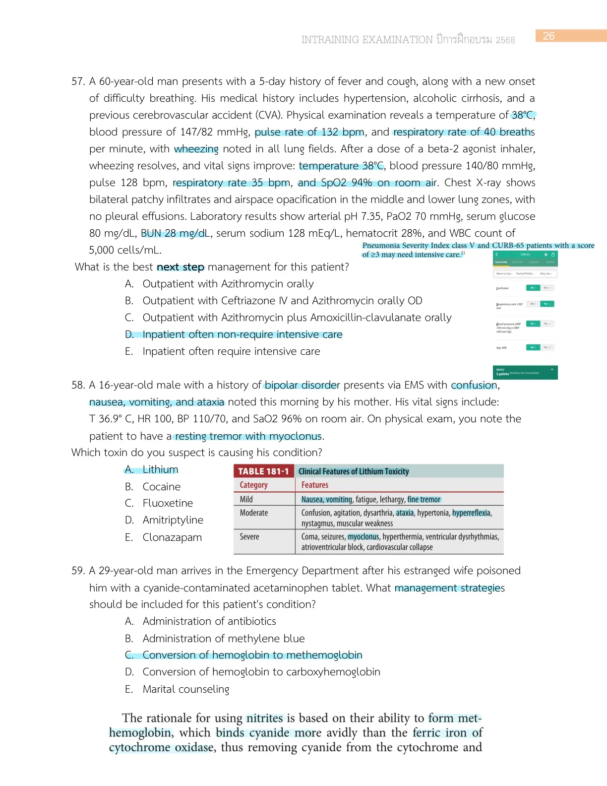
Intraining exam 100 ข้อ 12 Jan 2026, p.27
ถูกต้อง
Bipolar history with nausea, vomiting, confusion, ataxia, tremor, and myoclonus is typical for lithium toxicity.
ยังไม่ถูก
B. Cocaine
ยังไม่ถูก
C. Fluoxetine
ยังไม่ถูก
D. Amitriptyline
ยังไม่ถูก
E. Clonazapam
Source: Old special HTML: A16 | Page/slot: old-special | Marker: a16-envenomation-snake-marine-q26
Reference: Source: Old special HTML: A16 | Page/slot: old-special | Marker: a16-envenomation-snake-marine-q26
ซ่อนเฉลยเปิดเฉลยSolution readyA05-0053 answer
Answer
A. Lithium
Rationale
Bipolar history with nausea, vomiting, confusion, ataxia, tremor, and myoclonus is typical for lithium toxicity.
References
- Source note: Potential A16/toxicology item originally routed to A05. Full source page preserved; no answer/lesson in this pass. - Original reference: Reference: Source: Intraining exam 100 ข้อ 12 Jan 2026 | p.27 | originally routed as A05; answer intentionally not imported.
During snakebite transport, immobilize the bitten limb and avoid suction or unnecessary activity.
ยังไม่ถูก
B. บอกให้คนไข้ตื่นไว้ อย่าหลับ
ยังไม่ถูก
C. วัด palpebral fissure
ยังไม่ถูก
D. เอาปากดูดที่แผล (เค้าออกมาแบบนี้จริงๆนะ)
Source: Old special HTML: A16 | Page/slot: old-special | Marker: a16-envenomation-snake-marine-q31
Reference: Source: Old special HTML: A16 | Page/slot: old-special | Marker: a16-envenomation-snake-marine-q31
ซ่อนเฉลยเปิดเฉลยSolution readyA05-0054 answer
Answer
A. Immobilized จุดถูกกัด
Rationale
During snakebite transport, immobilize the bitten limb and avoid suction or unnecessary activity.
References
- Source note: Source image preserved from รวมข้อสอบ-board-2562-CHULA.pdf p.23. No answer/lesson in this collection pass. - Original reference: Reference: Source: รวมข้อสอบ-board-2562-CHULA.pdf | p.23 | full source page rendered; answer intentionally not imported.
Source: Old special HTML: A09 | Page/slot: old-special | Marker: a09-wound-animal-marine-water-q17
Reference: Source: Old special HTML: A09 | Page/slot: old-special | Marker: a09-wound-animal-marine-water-q17
ซ่อนเฉลยเปิดเฉลยSolution readyA05-0056 answer
Answer
A
Rationale
Rationale not imported.
References
- Source note: Source file: Copy of CPR one night miracle.pdf - Original reference: Reference: Source: Copy of CPR one night miracle.pdf | p.75 | Answer inferred from Tintinalli Ch.160 p.1066-1070: GI symptoms + septic shock + hand skin lesions in a high-risk host fit severe Vibrio vulnificus pattern; treatment anchor is doxycycline plus cephalosporin coverage.
A05-0057A05-Q0057solution_ready
Q7. U/D DM, CKD. 2 days PTA developed a pruritic rash after public hot-tub exposure. No fever and vital signs stable. Skin exam shows multiple erythematous papules and pustules, especially in areas covered by a swimsuit, sparing the face, palms, and soles. What is the most appropriate management?
ยังไม่ถูก
A. Oral acyclovir
ถูกต้อง
B. Oral ciprofloxacin
ยังไม่ถูก
C. Topical steroid
ยังไม่ถูก
D. Antihistamine
ยังไม่ถูก
E. Topical mupirocin
Source: Old special HTML: A09 | Page/slot: old-special | Marker: a09-wound-animal-marine-water-q7
Reference: Source: Old special HTML: A09 | Page/slot: old-special | Marker: a09-wound-animal-marine-water-q7
ซ่อนเฉลยเปิดเฉลยSolution readyA05-0057 answer
Answer
B
Rationale
Rationale not imported.
References
- Source note: Source file: MCQ 2025 รวมไม่แยกหัวข้อ.pdf - Original reference: Reference: Source: MCQ 2025 รวมไม่แยกหัวข้อ.pdf | p.33 | Also found in: MCQ 2025 แยกหัวข้อ.pdf p.42-49
A05-0058A05-Q0058solution_ready
Q14. ชายไปเล่นน้ำทะเล ถูก stingray/gray fish บริเวณตรงคอ หลังทำแผลแล้วลักษณะเหมือน laceration with pus. ยาปฏิชีวนะที่เหมาะสมที่สุดคือข้อใด?
Source: Old special HTML: A09 | Page/slot: old-special | Marker: a09-wound-animal-marine-water-q14
Reference: Source: Old special HTML: A09 | Page/slot: old-special | Marker: a09-wound-animal-marine-water-q14
ซ่อนเฉลยเปิดเฉลยSolution readyA05-0058 answer
Answer
A
Rationale
Rationale not imported.
References
- Source note: Source file: MCQ 2563 by EP15 Rajavithi.pdf - Original reference: Reference: Source: MCQ 2563 by EP15 Rajavithi.pdf | p.31 | source note has only one visible antibiotic answer line; kept review-only until full original choices/key are found.
The reviewed teaching-key page for the creatinine-rising snakebite item marks Factor X as the intended pathophysiology answer.
ยังไม่ถูก
C. Thrombin like effect
Source: Old special HTML: A16 | Page/slot: old-special | Marker: A16-0034
Reference: Source: Old special HTML: A16 | Page/slot: old-special | Marker: A16-0034
ซ่อนเฉลยเปิดเฉลยSolution readyA05-0059 answer
Answer
B. Factor X
Rationale
The reviewed teaching-key page for the creatinine-rising snakebite item marks Factor X as the intended pathophysiology answer.
References
- Source note: Source image preserved from Test for Snake bite ,.pdf p.10. No answer/lesson in this collection pass. - Original reference: Reference: Source: Test for Snake bite ,.pdf | p.10 | full source page rendered; answer intentionally not imported.
Bleeding after snakebite without neurotoxicity should be screened with venous clotting time/coagulation assessment.
ยังไม่ถูก
B. Peak flow
ยังไม่ถูก
C. PT
Source: Old special HTML: A16 | Page/slot: old-special | Marker: A16-0035
Reference: Source: Old special HTML: A16 | Page/slot: old-special | Marker: A16-0035
ซ่อนเฉลยเปิดเฉลยSolution readyA05-0060 answer
Answer
A. VCT
Rationale
Bleeding after snakebite without neurotoxicity should be screened with venous clotting time/coagulation assessment.
References
- Source note: Source image preserved from Test for Snake bite ,.pdf p.12. No answer/lesson in this collection pass. - Original reference: Reference: Source: Test for Snake bite ,.pdf | p.12 | full source page rendered; answer intentionally not imported.
Moved From C
Questions moved out of C because they fit this special better.